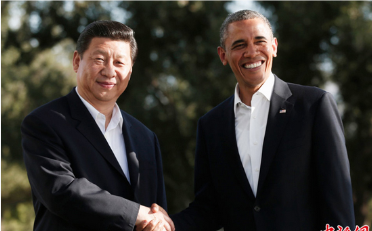

习近平访美前瞻:将广泛接触美国社会
2015年09月11日 15:50
中国外交部发言人陆慷16日宣布，国家主席习近平将于9月22日至25日对美国进行国事访问，并于9月26日至28日赴纽约联合国总部出席联合国成立70周年系列峰会。这是习近平就任国家主席以来首次对美进行国事访问，是继2013年美国加州“庄园会晤”和2014年北京“瀛台夜话”之后，中美元首再次重量级的面对面互动交流。
中美建交36年来，两国关系风雨兼程。从历史看，36年来，中美关系已经超越双边关系，越来越具有全球意义。中美关系稳定发展不仅对中美两国人民有好处，对亚太乃至全世界的和平稳定发展都具有重要意义。从现实看，今年以来，不同层面都有不同声音出现，在南海、网络安全、中国经济等问题上，美方对中国的担忧疑虑有所上升。